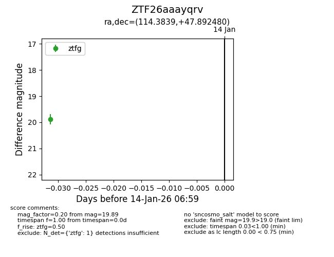
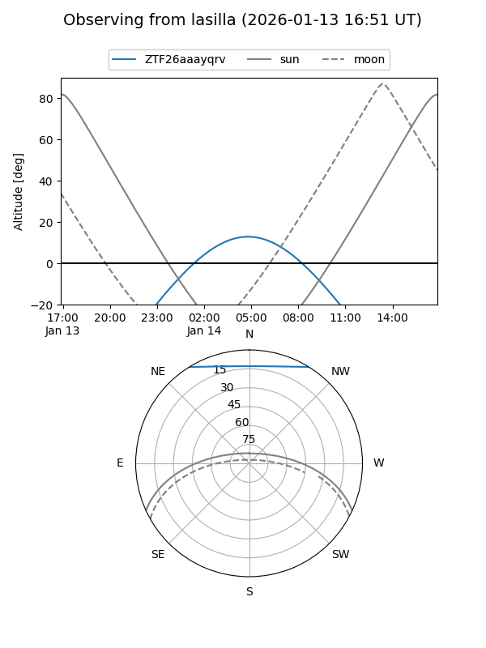
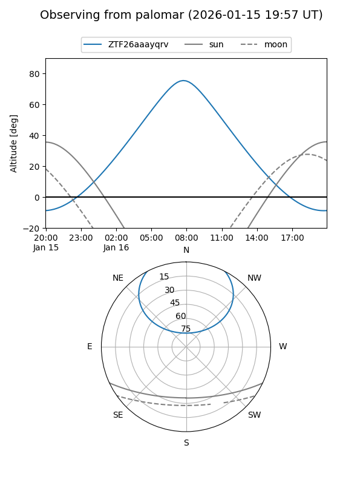

ZTF26aaayqrv
Target ZTF26aaayqrv at 2026-01-14 07:00
Aliases and brokers:
FINK: link
Lasair: link
ALeRCE: link
alt names
ZTF26aaayqrv (ztf,fink_ztf)
Coordinates:
equatorial (ra, dec) = 114.3839,+47.89248
equatorial (HMS+DMS) = 07:37:32.14,+47:53:32.93
galactic (l, b) = (170.5672,+27.22671)
Flags:
Photometry:
last ztfg=19.89
1 ztfg detections
Lightcurve

Visibility


Additional plots